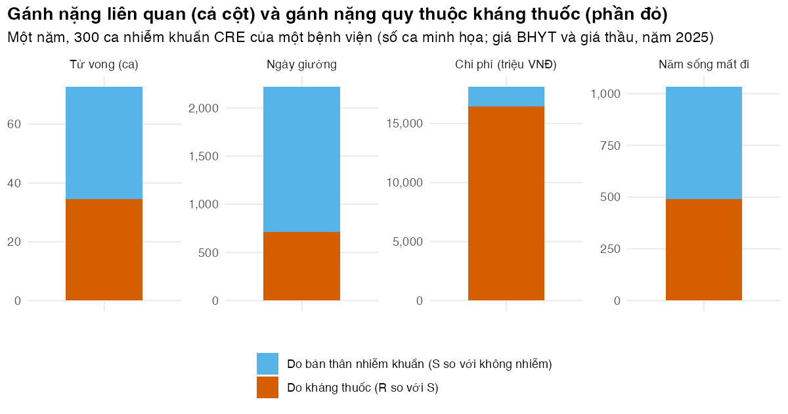

Bài 1: Kinh tế học kháng kháng sinh: ngoại ứng, gánh nặng và kịch bản phản thực
Phân biệt gánh nặng liên quan với gánh nặng quy thuộc, rồi tính cả hai bằng R cho một bệnh viện
Vì sao bạn nên quan tâm?
Một người bệnh 61 tuổi nằm ICU của một bệnh viện hạng đặc biệt, cấy máu mọc Klebsiella pneumoniae kháng carbapenem. Đây không còn là chuyện hiếm: trong một khảo sát toàn quốc công bố năm 2025 ở 324 bệnh viện, 37% chủng K. pneumoniae được báo cáo đã kháng carbapenem (Larsson và c.s. 2025). Một ngày colistin phối hợp meropenem liều cao tốn khoảng 3.96 triệu VNĐ theo giá trúng thầu (giá 2025), bằng 75% lương tối thiểu một tháng ở vùng I, hay 99 bát phở; cả đợt 14 ngày là khoảng 55 triệu VNĐ. Nhưng khi ban giám đốc hỏi “CRE tốn của bệnh viện bao nhiêu”, phần nào trong số đó thật sự do kháng thuốc? Bài này giúp bạn chọn đúng kịch bản phản thực trước khi đưa một con số gánh nặng lên bàn họp.
Mục tiêu học tập
Sau bài này, bạn có thể:
Giải thích vì sao kháng kháng sinh (antimicrobial resistance, AMR) là một ngoại ứng tiêu cực, và điều đó làm lệch kết quả đánh giá kinh tế ra sao.
Phân biệt gánh nặng liên quan (associated burden) với gánh nặng quy thuộc (attributable burden), và chọn kịch bản phản thực (counterfactual) đúng với câu hỏi chính sách.
Tính số tử vong, ngày giường, chi phí và số năm sống mất đi do nhiễm khuẩn Enterobacterales kháng carbapenem (carbapenem-resistant Enterobacterales, CRE) ở một bệnh viện theo cả hai kịch bản phản thực bằng R.
Ước tính chi phí xã hội của một liệu trình carbapenem khi cộng thêm chi phí ngoại ứng.
Ý chính
Mỗi liệu trình kháng sinh giúp người bệnh hôm nay nhưng làm giảm hiệu quả của thuốc cho người bệnh ngày mai. Người kê đơn không trả phần chi phí này, nên đó là ngoại ứng (externality).
Mọi con số gánh nặng AMR trả lời câu hỏi so với điều gì?Gánh nặng liên quan so với không nhiễm khuẩn; gánh nặng quy thuộc so với nhiễm khuẩn do chủng nhạy cảm. Số liên quan luôn lớn hơn vì gồm cả phần do bản thân nhiễm khuẩn.
Chọn kịch bản phản thực theo can thiệp. Thuốc mới diệt được CRE biến nhiễm khuẩn kháng thành nhiễm khuẩn “như nhạy cảm”: dùng gánh nặng quy thuộc. Kiểm soát nhiễm khuẩn ngăn được ca nhiễm: dùng gánh nặng liên quan.
Chi phí do kháng thuốc đến từ ngày nằm viện tăng thêm (Stewardson và c.s. 2016) và kháng sinh dự trữ. Với giá ở Việt Nam, một ngày phác đồ có colistin đắt gấp 25 lần một ngày meropenem generic và gấp 3.9 lần giá một ngày giường ICU, nên giá thuốc chiếm phần lớn chi phí quy thuộc (97% mỗi ca trong mô hình của bài).
Đánh giá kinh tế bỏ qua ngoại ứng sẽ đánh giá thấp các can thiệp giúp giảm dùng kháng sinh.
Nội dung
Kháng thuốc là một ngoại ứng
Hiệu quả của một nhóm kháng sinh là một nguồn tài nguyên chung. Mỗi lần dùng thuốc, chủng nhạy bị diệt và chủng đề kháng có thêm chỗ phát triển (áp lực chọn lọc, Bài 4). Người bệnh hưởng trọn lợi ích của liệu trình, còn chi phí kháng thuốc thì dàn trải cho người bệnh khác, ở thời điểm khác. Khi chi phí không nằm trong giá, xã hội dùng kháng sinh nhiều hơn mức tối ưu (Coast, Smith, và Millar 1996; Laxminarayan và c.s. 2013).
Về hình thức, chi phí xã hội của một liệu trình là:
\[
C_{\text{xã hội}} = C_{\text{riêng}} + C_{\text{ngoại ứng}} = d \cdot c_{\text{thuốc}} + d \cdot n_{SU} \cdot c_{AMR},
\]
trong đó \(d\) là số ngày điều trị, \(n_{SU}\) là số đơn vị chuẩn (standard unit, SU) mỗi ngày, và \(c_{AMR}\) là chi phí kháng thuốc gây ra trên mỗi SU. Đánh giá kinh tế thông thường chỉ tính \(C_{\text{riêng}}\). Shrestha và cộng sự ước tính \(c_{AMR}\) theo nhóm thuốc; trong bối cảnh Thái Lan, giá trị này nằm trong khoảng US$0.1 đến US$0.7 mỗi SU, và trong bối cảnh Mỹ, ước tính riêng cho carbapenem là US$0.1 mỗi SU (các tác giả không nêu năm giá trong tóm tắt) (Shrestha và c.s. 2018). Bỏ qua phần này làm can thiệp giảm dùng kháng sinh (xét nghiệm nhanh, quản lý sử dụng kháng sinh) trông kém hấp dẫn hơn thực tế.
Gánh nặng: liên quan hay quy thuộc?
Nghiên cứu gánh nặng AMR toàn cầu dùng hai kịch bản phản thực cho cùng một bộ dữ liệu (Antimicrobial Resistance Collaborators 2022). Năm 2019 có 4.95 triệu ca tử vong liên quan đến AMR do vi khuẩn. Trong số đó, 1.27 triệu ca quy thuộc AMR, tức khoảng 26%. Ước tính cho năm 2021 cũng theo cấu trúc đó: 4.71 và 1.14 triệu (GBD 2021 Antimicrobial Resistance Collaborators 2024). Số liên quan gấp 3.9 lần số quy thuộc, nhưng không con số nào sai. Chúng trả lời hai câu hỏi khác nhau.
flowchart LR A["Người bệnh nhiễm khuẩn CRE<br/>(thế giới thực)"] --> B{"Nếu không có kháng thuốc thì sao?"} B -->|"Phản thực 1: nhiễm chủng nhạy cảm"| C["Gánh nặng QUY THUỘC<br/>= CRE trừ nhiễm khuẩn nhạy"] B -->|"Phản thực 2: không nhiễm khuẩn"| D["Gánh nặng LIÊN QUAN<br/>= CRE trừ không nhiễm khuẩn"]
flowchart LR
A["Người bệnh nhiễm khuẩn CRE<br/>(thế giới thực)"] --> B{"Nếu không có kháng thuốc thì sao?"}
B -->|"Phản thực 1: nhiễm chủng nhạy cảm"| C["Gánh nặng QUY THUỘC<br/>= CRE trừ nhiễm khuẩn nhạy"]
B -->|"Phản thực 2: không nhiễm khuẩn"| D["Gánh nặng LIÊN QUAN<br/>= CRE trừ không nhiễm khuẩn"]
Gánh nặng nên được đo bằng cả tử vong lẫn thời gian nằm viện (de Kraker và c.s. 2011). Trong dữ liệu nhiều bệnh viện châu Âu, nhiễm khuẩn huyết do Enterobacteriaceae kháng cephalosporin thế hệ 3 làm người bệnh nằm viện thêm 9.3 ngày so với không nhiễm khuẩn huyết, chủng nhạy làm nằm thêm 5.9 ngày, và phần quy thuộc đề kháng (kháng so với nhạy) là 4.9 ngày (KTC 95%: 1.1–8.7) (Stewardson và c.s. 2016). Đây là ước tính đã điều chỉnh cho một người bệnh tham chiếu, nên khoảng tin cậy của hai số đầu hẹp bất thường. Số chưa điều chỉnh, được các tác giả dùng để tính chi phí, là 7.9, 4.4 và 3.5 ngày. Các số đã điều chỉnh không cộng được (5.9 + 4.9 = 10.8, không bằng 9.3) vì so sánh kháng-nhạy nằm trong một mô hình riêng; số chưa điều chỉnh thì gần cộng được (7.9 so với 7.9). Đẳng thức phân tách ở phần sau chỉ đúng trong một mô hình và một quần thể.
Với CRE, tổng quan của Falagas và cộng sự định nghĩa tử vong quy thuộc là chênh lệch tỷ lệ tử vong do mọi nguyên nhân giữa nhiễm khuẩn kháng và nhạy carbapenem. Chênh lệch này nằm trong khoảng 26 đến 44 điểm phần trăm ở 7 nghiên cứu, và là -4 và -3 điểm phần trăm ở hai nghiên cứu còn lại. Tám trong chín nghiên cứu là hồi cứu và số liệu gộp chưa điều chỉnh; tỷ số nguy cơ tử vong gộp là 2.05 (KTC 95%: 1.56–2.69) (Falagas và c.s. 2014).
Ở Việt Nam, mạng giám sát VINARES ghi nhận 16% chủng K. pneumoniae kháng imipenem giai đoạn 2012–2013 (Vu và c.s. 2019). Một khảo sát trực tuyến qua Bộ Y tế, công bố năm 2025, ở 324 bệnh viện từ tuyến huyện đến trung ương, ghi nhận 37% ở K. pneumoniae và 11% ở E. coli. Người nhiễm CRE có tỷ lệ tử vong thô 31.7%, so với 20.2% khi chủng nhạy carbapenem, và nằm viện 10.4 so với 8.9 ngày (Larsson và c.s. 2025). Chênh lệch 11.5 điểm phần trăm là một ước tính quy thuộc thô: chưa điều chỉnh mức độ nặng, và thời gian nằm viện chưa xử lý sai lệch phụ thuộc thời gian (Bài 2). Khảo sát cũng báo cáo chi phí (1,025 so với 773), nhưng tóm tắt không nêu đơn vị tiền tệ, năm giá hay thành phần chi phí, nên bài không dùng hai số này. Tại bốn ICU ở Việt Nam, chi phí ICU trung vị của viêm hô hấp liên quan thở máy do Gram âm kháng carbapenem là US$6,053, so với US$3,131 khi vi khuẩn nhạy carbapenem (Phu và c.s. 2017); nhóm này gồm cả A. baumannii và P. aeruginosa, nên không phải ước tính riêng cho CRE.
Kịch bản phản thực phải khớp với can thiệp
Quy tắc đơn giản: hỏi can thiệp làm thay đổi điều gì?
Can thiệp
Thế giới khi có can thiệp
Kịch bản phản thực phù hợp
Kháng sinh mới hoặc xét nghiệm nhanh giúp điều trị đúng sớm
Ca nhiễm vẫn xảy ra nhưng diễn tiến như nhiễm khuẩn nhạy
Quy thuộc (kháng so với nhạy)
Kiểm soát nhiễm khuẩn, sàng lọc và cách ly
Ca nhiễm không xảy ra
Liên quan (kháng so với không nhiễm)
Quản lý sử dụng kháng sinh
Ít chủng kháng hơn; một phần ca nhiễm thành nhạy, một phần không xảy ra
Kết hợp, cần mô hình động (Bài 4, 5)
Chủng kháng thay thế chủng nhạy hay cộng thêm vào? Nếu thay thế, phản thực “nhạy cảm” hợp lý; nếu cộng thêm, một phần ca kháng sẽ không tồn tại khi không có kháng thuốc. Với nhiễm khuẩn huyết, các tác giả châu Âu cho rằng chủng không nhạy nhiều khả năng cộng thêm hơn là thay thế chủng nhạy (Stewardson và c.s. 2016); thực tế có thể nằm giữa hai cực. Vì vậy hãy báo cáo cả hai số đo, như các nghiên cứu gánh nặng toàn cầu (Antimicrobial Resistance Collaborators 2022; GBD 2021 Antimicrobial Resistance Collaborators 2024). Kết quả còn phụ thuộc vào kết cục, quan điểm và phương pháp của từng nghiên cứu (Naylor và c.s. 2018).
Tính cho một bệnh viện
Ta dùng một bệnh viện hạng đặc biệt với 300 ca nhiễm khuẩn CRE mỗi năm (giá trị minh họa; chưa có số ca công khai theo bệnh viện). Số đo vượt trội mỗi ca được lấy từ mô hình đa trạng thái mà Bài 2 sẽ mô phỏng. Với nguy cơ tức thời (hazard) không đổi, người bệnh ở một trạng thái có tổng nguy cơ rời trạng thái \(h_\bullet\) sẽ nằm thêm trung bình \(1/h_\bullet\) ngày, và tử vong với xác suất \(h_{\text{tử vong}}/h_\bullet\). Các nguy cơ tử vong sau nhiễm khuẩn được chọn để xác suất tử vong khớp số thô của khảo sát toàn quốc (31.7% sau nhiễm CRE, 20.2% sau nhiễm khuẩn nhạy); thời gian nằm viện và nhóm không nhiễm khuẩn là giá trị minh họa. Từ đó:
với \(g\) là thời gian nằm viện còn lại hoặc xác suất tử vong sau sự kiện. Đẳng thức thứ ba cho thấy gánh nặng liên quan tách được thành phần do kháng thuốc và phần do bản thân nhiễm khuẩn. Trong mô hình, mỗi ca CRE làm tăng xác suất tử vong 24.3 điểm phần trăm so với không nhiễm khuẩn, nhưng chỉ 11.5 điểm phần trăm so với nhiễm khuẩn nhạy.
Số năm sống mất đi (YLL) của một ca tử vong lấy từ bảng sống WHO 2023 của Việt Nam (vn_mx()) ở tuổi 61, tuổi trung vị của người bệnh trong một điều tra nhiều ICU người lớn ở Việt Nam (Phu và c.s. 2016; World Health Organization 2026), với tỷ suất tử vong nền nhân 2.0 lần cho người sống sót sau hồi sức (giá trị minh họa).
Chi phí bằng lượng nhân giá. Giá ngày giường là giá dịch vụ BHYT ở bệnh viện hạng đặc biệt: 1,017,300 VNĐ một ngày ICU và 327,100 VNĐ một ngày nội khoa loại 1 (Bộ Y tế 2024); ta định giá phần 50% số ngày tăng thêm theo giá ICU và phần còn lại theo giá khoa thường (tỷ lệ này là minh họa). Kháng sinh dùng giá trúng thầu đưa về năm 2025: colistin phối hợp meropenem liều cao cho CRE, meropenem liều thường cho nhiễm khuẩn nhạy (Bệnh viện Trung ương Thái Nguyên 2023; Bệnh viện Đa khoa khu vực Củ Chi 2024). Giá BHYT là giá thanh toán, không phải chi phí nguồn lực; và ngày giường giải phóng được dùng ngay cho người bệnh khác, nên giá trị của nó là chi phí cơ hội, không phải tiền mặt tiết kiệm được (Graves và c.s. 2010; Stewardson và c.s. 2016).
Thực hành
Nạp các hàm dùng chung, giá trị dùng chung của khóa học (vn_data.R), hàm của module và mọi bảng tham số. Hàm read_all_params() ghép tham số của module với các dòng lấy từ kb/_shared (giá BHYT, giá thuốc, ngưỡng, chiết khấu). Kiểm tra: không có lỗi về tham số thiếu nguồn hay trùng tên.
# Vietnamese text in figures needs a UTF-8 locale (Rscript may start in the "C" locale)if (!isTRUE(l10n_info()[["UTF-8"]])) invisible(Sys.setlocale("LC_CTYPE", "en_US.UTF-8"))source("../_shared/R/helpers.R")source("../_shared/R/vn_data.R") # course-wide values: vn_context(), vn_prices(), vn_mx(), inflate_vnd()source("code/model.R")library(ggplot2)p <-read_all_params() # module params/*.csv plus course-wide rows from ../_shared (file = "_shared")H <-ms_hazards_true(p) # hazards of the hospital model (also used in Lesson 2)
Đặt hai số đo toàn cầu cạnh nhau. Kiểm tra: số quy thuộc nhỏ hơn số liên quan ở mọi năm.
# Global burden (verified sources, see params/context.csv): associated vs attributable deathsgram <-data.frame(year =c(2019, 2021),associated =c(p$gram2019_assoc_deaths, p$gram2021_assoc_deaths),attributable =c(p$gram2019_attr_deaths, p$gram2021_attr_deaths))gram$attr_share <- gram$attributable / gram$associatedgram
Tóm tắt ba “thế giới” của cùng một người bệnh: thời gian nằm viện còn lại và xác suất tử vong sau sự kiện. Kiểm tra: xác suất trong đoạn 0–1; nhiễm CRE làm nằm viện lâu hơn nhiễm khuẩn nhạy; công thức đóng khớp với một mô phỏng lớn; và xác suất tử vong vẫn khớp số của khảo sát toàn quốc.
# Three counterfactual worlds for the same patient, from the hazards of the hospital model:# remaining stay (days) and probability of dying in hospital after the eventstates <-ms_state_summary(H)states$state_vi <-c("Không nhiễm khuẩn", "Nhiễm khuẩn nhạy (CSE)", "Nhiễm khuẩn kháng (CRE)")states[, c("state_vi", "remaining_los", "p_death")]
stopifnot(all(states$p_death >=0), all(states$p_death <=1), states$remaining_los[3] > states$remaining_los[2])# Independent check of the closed forms: simulate 200,000 admissions without censoring and# compare the death proportion in each group, and the stay after infection, with the formulasset.seed(101)p_chk <- pp_chk$max_follow <-1e6d_chk <-simulate_admissions(p_chk, 200000)sim_death <-tapply(d_chk$outcome =="Dead", d_chk$inf_type, mean)[c("none", "S", "R")]after <- d_chk$los - d_chk$t_infsim_after <-c(S =mean(after[d_chk$inf_type =="S"]), R =mean(after[d_chk$inf_type =="R"]))round(rbind(formula_death = states$p_death, simulated_death = sim_death), 3)
none S R
formula_death 0.074 0.202 0.317
simulated_death 0.074 0.202 0.317
S R
formula_stay_after 14.29 16.67
simulated_stay_after 14.36 16.45
stopifnot(all(abs(sim_death - states$p_death) <0.02),all(abs(sim_after - states$remaining_los[2:3]) <1))# The death probabilities after infection were chosen to reproduce the crude mortality of the# Vietnamese national hospital survey (params/los_sim.csv); check that they still dostopifnot(abs(states$p_death[2] - p$larsson_mort_cse) <0.005,abs(states$p_death[3] - p$larsson_mort_cre) <0.005)
Đoạn mã sau tính số đo vượt trội cho mỗi ca, kiểm tra đẳng thức phân tách ở trên, rồi đối chiếu với Falagas và cộng sự trên hai thang: chênh lệch tuyệt đối (điểm phần trăm) và tỷ số nguy cơ. Kiểm tra: hai dòng cuối cho biết mô hình nằm trong hay ngoài từng khoảng.
# Excess per CRE infection under each counterfactualex <-excess_measures(H)round(ex, 3)
# The two comparisons are linked: (R vs none) = (R vs S) + (S vs none). This is algebra,# so the check only guards against indexing typos; the simulation check above tests the formulas.stopifnot(abs(ex[["los_R_none"]] - (ex[["los_R_S"]] + ex[["los_S_none"]])) <1e-12,abs(ex[["death_R_none"]] - (ex[["death_R_S"]] + ex[["death_S_none"]])) <1e-12)# Face validity against Falagas 2014. Their "attributable death" is a DIFFERENCE in mortality# between resistant and susceptible infections (percentage points), so compare it with# death_R_S, not with a share of the deaths. Their pooled unadjusted risk ratio is the# like-for-like check on the relative scale.ptab <-attr(p, "table")rd_model <- ex[["death_R_S"]]rr_model <- states$p_death[3] / states$p_death[2]rr_ci <-unlist(ptab[ptab$name =="falagas_rr", c("low", "high")])rd_in_range <- rd_model >= p$falagas_attr_min && rd_model <= p$falagas_attr_maxrr_in_ci <- rr_model >= rr_ci[["low"]] && rr_model <= rr_ci[["high"]]round(c(model_rd = rd_model, falagas_min = p$falagas_attr_min, falagas_max = p$falagas_attr_max,model_rr = rr_model, falagas_rr = p$falagas_rr, rr_low = rr_ci[["low"]], rr_high = rr_ci[["high"]]), 3)
# Words for the lesson text ("nằm dưới / trong / trên")rd_pos <-if (rd_model < p$falagas_attr_min) "nằm dưới"elseif (rd_model > p$falagas_attr_max) "nằm trên"else"nằm trong"rr_pos <-if (rr_model < rr_ci[["low"]]) "nằm dưới"elseif (rr_model > rr_ci[["high"]]) "nằm trên"else"nằm trong"
Chênh lệch tỷ lệ tử vong giữa nhiễm CRE và nhiễm khuẩn nhạy là 11.5 điểm phần trăm, nằm dưới khoảng 26–44 điểm phần trăm của Falagas và cộng sự. Tỷ số nguy cơ là 1.57, nằm trong khoảng tin cậy 95% của tỷ số gộp (1.56–2.69). Hai kết quả không mâu thuẫn: chênh lệch tuyệt đối phụ thuộc vào tỷ lệ tử vong nền (20.2% ở người nhiễm khuẩn nhạy), còn tỷ số ít phụ thuộc hơn. Vì các xác suất này lấy từ số thô của khảo sát Việt Nam, đây là đối chiếu số liệu Việt Nam với tổng quan quốc tế, không phải hiệu chuẩn; cả hai nguồn đều chưa điều chỉnh mức độ nặng.
Nhân với số ca mỗi năm ra gánh nặng của bệnh viện. Đoạn mã in trước số năm sống mất đi cho mỗi ca tử vong. Cột share là tỷ lệ quy thuộc trên liên quan.
# Annual burden of the hospital's CRE infections: BHYT bed-day prices and tender drug prices# (2025 prices, ../_shared), illustrative number of infections and ICU share of the extra days.# Years of life lost per death come from the WHO life table (vn_mx()) at the median ICU age.yll_per_death <-life_years_after_icu(p, disc_rate =0)round(c(age = p$age_icu, hr_post_icu = p$hr_post_icu, yll_per_death = yll_per_death), 1)
age hr_post_icu yll_per_death
61.0 2.0 14.2
bt <-burden_table(p, H)bt$share <- bt$attributable / bt$associatedbt_show <- bt # round a copy for printing; keep bt exact for the textbt_show[, -1] <-round(bt_show[, -1], 2)bt_show
Như vậy, mỗi năm bệnh viện có 72.8 ca tử vong liên quan đến CRE, trong đó 34.4 ca quy thuộc kháng thuốc; mỗi ca tử vong mất 14.2 năm sống (chưa chiết khấu). Chi phí liên quan là 18.1 tỷ VNĐ, chi phí quy thuộc là 16.4 tỷ VNĐ (giá 2025; số ca minh họa). Tiền kháng sinh dự trữ chiếm 97% chi phí quy thuộc, nên với chi phí, tỷ lệ quy thuộc trên liên quan (91%) cao hơn hẳn so với tử vong (47%). Hình dưới tách mỗi cột thành phần do bản thân nhiễm khuẩn và phần do kháng thuốc.
measure_vi <-c(deaths ="Tử vong (ca)", bed_days ="Ngày giường",cost_million_vnd ="Chi phí (triệu VNĐ)", yll ="Năm sống mất đi")plot_df <-data.frame(measure =factor(rep(measure_vi[bt$measure], 2), levels = measure_vi),part =factor(rep(c("Do bản thân nhiễm khuẩn (S so với không nhiễm)","Do kháng thuốc (R so với S)"), each =nrow(bt)),levels =c("Do bản thân nhiễm khuẩn (S so với không nhiễm)","Do kháng thuốc (R so với S)")),value =c(bt$associated - bt$attributable, bt$attributable))fig_cf <-ggplot(plot_df, aes(x ="", y = value, fill = part)) +geom_col(width =0.6) +facet_wrap(~measure, scales ="free_y", nrow =1) +scale_fill_manual(values = pal_course[c(5, 2)], name =NULL) +scale_y_continuous(labels =function(x) fmt_num(x)) +labs(x =NULL, y =NULL,title ="Gánh nặng liên quan (cả cột) và gánh nặng quy thuộc kháng thuốc (phần đỏ)",subtitle =sprintf("Một năm, %s ca nhiễm khuẩn CRE của một bệnh viện (số ca minh họa; giá BHYT và giá thầu, năm %s)",fmt_num(p$n_inf_cre), "2025")) +theme_course() +theme(legend.direction ="vertical")save_fig(fig_cf, "l01-counterfactuals.png", width =8, height =4.2)

Gánh nặng liên quan và gánh nặng quy thuộc của các ca nhiễm khuẩn CRE trong một năm (số ca minh họa; giá BHYT và giá thầu năm 2025).
Cuối cùng, ta tính chi phí xã hội của một liệu trình meropenem theo kinh nghiệm. Với \(c_{AMR}\) ≈ US$0.4 mỗi SU (trung điểm khoảng Thái Lan, tức 9,988 VNĐ theo tỷ giá 24,970 VNĐ/USD), phần ngoại ứng chiếm 15.8% chi phí xã hội. Meropenem generic rẻ (khoảng 53,088 VNĐ một lọ 1 g), nên phần ngoại ứng không nhỏ so với giá thuốc; con số này phụ thuộc hoàn toàn vào \(c_{AMR}\), tham số bất định nhất của cả bài (xem Bài tập 3).
# Private vs social cost of one empirical carbapenem course: meropenem at its 2025 tender price,# external cost per SU from Shrestha et al. (Thai range, converted with the course exchange rate)c(c_carb_day = p$c_carb_day, su_per_day = p$su_per_day, c_amr_su_vnd =amr_cost_su(p))
Trước khi tính, viết ra một câu: “so với kịch bản trong đó…”. Nếu không viết được, bạn chưa có câu hỏi.
Báo cáo song song gánh nặng liên quan và gánh nặng quy thuộc, như các nghiên cứu gánh nặng toàn cầu đã làm.
Giữ mọi chi phí đơn vị kèm năm giá. Giá chung của khóa học nằm ở kb/_shared; khi bệnh viện của bạn có bảng giá hay giá thầu riêng, chỉ cần thay tệp CSV.
Đọc một bài báo về chi phí AMR, trước hết tìm nhóm so sánh và cách xử lý thời điểm nhiễm khuẩn (Wozniak và c.s. 2019).
Lỗi thường gặp
Dùng gánh nặng liên quan cho can thiệp chỉ biến chủng kháng thành “như nhạy”. Lợi ích bị phóng đại nhiều lần. Kiểm tra bằng bảng “can thiệp làm thay đổi điều gì” ở trên.
Cộng dồn gánh nặng quy thuộc của nhiều cặp vi khuẩn–kháng sinh. Một chủng đa kháng có thể bị đếm nhiều lần. Kiểm tra định nghĩa cặp và phần chồng lấn trước khi cộng.
Coi ngày giường giảm được là tiền tiết kiệm được. Giường trống được lấp ngay, nên lợi ích là năng lực phục vụ thêm, không phải ngân sách được hoàn lại.
Nhầm tỷ lệ tử vong của người nhiễm CRE với tử vong quy thuộc. Người nhiễm CRE thường nặng sẵn; một phần tử vong vẫn xảy ra khi không có nhiễm khuẩn.
Bài tập
Bài 1 (dễ). Tính tỷ lệ K. pneumoniae và E. coli kháng imipenem trong VINARES 2012–2013, kèm KTC 95% chính xác (Clopper–Pearson), rồi so với tỷ lệ của khảo sát toàn quốc công bố năm 2025.
Lời giải
binom.test() cho khoảng tin cậy chính xác của một tỷ lệ nhị thức.
species r n prop lo hi
1 K. pneumoniae 242 1526 0.159 0.141 0.178
2 E. coli 180 2977 0.060 0.052 0.070
K. pneumoniae kháng imipenem 15.9 (KTC 95%: 14.1–17.8) phần trăm, cao gấp khoảng 2.6 lần E. coli. Khảo sát công bố năm 2025 báo cáo 37% và 11%. Hai nguồn khác nhau về mạng lưới bệnh viện, cách chọn chủng và kháng sinh thử, nên chỉ nói được rằng kháng carbapenem đã phổ biến hơn, không nói được tăng chính xác bao nhiêu.
Bài 2 (vừa). Bệnh viện cân nhắc hai can thiệp: (a) một kháng sinh mới khiến nhiễm khuẩn CRE diễn tiến như nhiễm khuẩn nhạy; (b) một gói kiểm soát nhiễm khuẩn ngăn được toàn bộ các ca nhiễm khuẩn CRE. Mỗi can thiệp tránh được bao nhiêu ca tử vong mỗi năm?
Lời giải
Can thiệp (a) dùng phản thực “nhạy cảm”, can thiệp (b) dùng phản thực “không nhiễm khuẩn”.
# Exercise 2: deaths averted per year by two kinds of intervention# (a) a new drug that makes CRE infections behave like susceptible ones -> R vs S# (b) infection prevention that stops the infections altogether -> R vs noneaverted <-c(new_drug = p$n_inf_cre * ex[["death_R_S"]],prevention = p$n_inf_cre * ex[["death_R_none"]])round(averted, 1)
new_drug prevention
34.4 72.8
Kiểm soát nhiễm khuẩn tránh được 72.8 ca, thuốc mới tránh được 34.4 ca. Cùng một bệnh viện, cùng số ca nhiễm, nhưng lợi ích khác nhau vì kịch bản phản thực khác nhau.
Bài 3 (khó). Với giá trị \(c_{AMR}\) nào thì chi phí ngoại ứng của một liệu trình meropenem bằng đúng giá mua thuốc? So sánh với khoảng ước tính của Shrestha và cộng sự (quy ra VNĐ), và cho biết bạn cần thêm thông tin gì để so sánh này có ý nghĩa.
Lời giải
Cho \(d \cdot n_{SU} \cdot c_{AMR} = d \cdot c_{\text{thuốc}}\), ta có \(c_{AMR} = c_{\text{thuốc}} / n_{SU}\), tức giá một lọ.
# Exercise 3: value of the resistance cost per SU at which the external cost of a# course equals its purchase pricec_amr_breakeven <- p$c_carb_day / p$su_per_day # VND per SUshrestha_vnd <-c(low = p$shrestha_su_min_usd, high = p$shrestha_su_max_usd) * p$fx_vnd_per_usdround(c(breakeven_vnd = c_amr_breakeven, shrestha_vnd, breakeven_usd = c_amr_breakeven / p$fx_vnd_per_usd), 2)
breakeven_vnd low high breakeven_usd
53087.91 2497.00 17479.00 2.13
Điểm hòa vốn là 53,088 VNĐ mỗi SU (khoảng US$2.13), cao hơn khoảng 2,497 VNĐ–17,479 VNĐ của Shrestha và cộng sự quy theo tỷ giá năm 2025. Để so sánh có ý nghĩa, cần năm giá của ước tính gốc (để đưa về giá 2025, M09), một ước tính riêng cho carbapenem trong bối cảnh Việt Nam, và phân biệt chi phí trung bình với chi phí biên (Bài 5).
Tài liệu tham khảo
Antimicrobial Resistance Collaborators. 2022. “Global burden of bacterial antimicrobial resistance in 2019: a systematic analysis”. The Lancet 399 (10325): 629–55. https://doi.org/10.1016/S0140-6736(21)02724-0.
de Kraker, Marlieke E. A., Peter G. Davey, Hajo Grundmann, và c.s. 2011. “Mortality and hospital stay associated with resistant Staphylococcus aureus and Escherichia coli bacteremia: estimating the burden of antibiotic resistance in Europe”. PLoS Medicine 8 (10): e1001104. https://doi.org/10.1371/journal.pmed.1001104.
Falagas, Matthew E., Giannoula S. Tansarli, Drosos E. Karageorgopoulos, và Konstantinos Z. Vardakas. 2014. “Deaths attributable to carbapenem-resistant Enterobacteriaceae infections”. Emerging Infectious Diseases 20 (7): 1170–75. https://doi.org/10.3201/eid2007.121004.
GBD 2021 Antimicrobial Resistance Collaborators. 2024. “Global burden of bacterial antimicrobial resistance 1990–2021: a systematic analysis with forecasts to 2050”. The Lancet 404 (10459): 1199–1226. https://doi.org/10.1016/S0140-6736(24)01867-1.
Graves, Nicholas, Stephan Harbarth, Jan Beyersmann, Adrian Barnett, Kate Halton, và Ben Cooper. 2010. “Estimating the cost of health care-associated infections: mind your p’s and q’s”. Clinical Infectious Diseases 50 (7): 1017–21. https://doi.org/10.1086/651110.
Larsson, M, L V N Truong, T D Nguyen, T N Do, T B N Hoang, M V Nong, M P Doan, và c.s. 2025. “Burden of carbapenem-resistant Gram-negative bacterial infections in Vietnam: a national hospital survey”. Journal of Hospital Infection 165: 189–98. https://doi.org/10.1016/j.jhin.2025.03.019.
Laxminarayan, Ramanan, Adriano Duse, Chand Wattal, Anita K. M. Zaidi, Heiman F. L. Wertheim, Nithima Sumpradit, và c.s. 2013. “Antibiotic resistance—the need for global solutions”. The Lancet Infectious Diseases 13 (12): 1057–98. https://doi.org/10.1016/S1473-3099(13)70318-9.
Naylor, Nichola R., Rifat Atun, Nina Zhu, Kavian Kulasabanathan, Sachin Silva, Anuja Chatterjee, và c.s. 2018. “Estimating the burden of antimicrobial resistance: a systematic literature review”. Antimicrobial Resistance and Infection Control 7: 58. https://doi.org/10.1186/s13756-018-0336-y.
Phu, Vu Dinh, Behzad Nadjm, Nguyen Hoang Anh Duy, Dao Xuan Co, Nguyen Thi Hoang Mai, Dao Tuyet Trinh, và c.s. 2017. “Ventilator-associated respiratory infection in a resource-restricted setting: impact and etiology”. Journal of Intensive Care 5: 69. https://doi.org/10.1186/s40560-017-0266-4.
Phu, Vu Dinh, Heiman F L Wertheim, Mattias Larsson, Behzad Nadjm, Quynh-Dao Dinh, Lennart E Nilsson, Ulf Rydell, và c.s. 2016. “Burden of Hospital Acquired Infections and Antimicrobial Use in Vietnamese Adult Intensive Care Units”. PLoS One 11 (1): e0147544. https://doi.org/10.1371/journal.pone.0147544.
Shrestha, Poojan, Ben S. Cooper, Joanna Coast, Raymond Oppong, Nga Do Thi Thuy, Tuangrat Phodha, và c.s. 2018. “Enumerating the economic cost of antimicrobial resistance per antibiotic consumed to inform the evaluation of interventions affecting their use”. Antimicrobial Resistance and Infection Control 7: 98. https://doi.org/10.1186/s13756-018-0384-3.
Stewardson, Andrew J., Arthur Allignol, Jan Beyersmann, Nicholas Graves, Martin Schumacher, Rodolphe Meyer, và c.s. 2016. “The health and economic burden of bloodstream infections caused by antimicrobial-susceptible and non-susceptible Enterobacteriaceae and Staphylococcus aureus in European hospitals, 2010 and 2011: a multicentre retrospective cohort study”. Eurosurveillance 21 (33): 30319. https://doi.org/10.2807/1560-7917.ES.2016.21.33.30319.
Vu, Tien Viet Dung, Thi Thuy Nga Do, Ulf Rydell, Lennart E. Nilsson, Linus Olson, Mattias Larsson, và c.s. 2019. “Antimicrobial susceptibility testing and antibiotic consumption results from 16 hospitals in Viet Nam: the VINARES project 2012–2013”. Journal of Global Antimicrobial Resistance 18: 269–78. https://doi.org/10.1016/j.jgar.2019.06.002.
World Health Organization. 2026. “Global Health Observatory: life tables by country, Viet Nam, 2023 (indicators LIFE_0000000029 nMx, LIFE_0000000030 nqx, LIFE_0000000035 ex)”. 2026. https://ghoapi.azureedge.net/api/LIFE_0000000029.
Wozniak, Teresa M., Louise Barnsbee, Xing J. Lee, và Rosana E. Pacella. 2019. “Using the best available data to estimate the cost of antimicrobial resistance: a systematic review”. Antimicrobial Resistance and Infection Control 8: 26. https://doi.org/10.1186/s13756-019-0472-z.
Kịch bản video (~13 phút)
#
Slide
Lời giảng chính
Hình/Code
1
Mở đầu: một ca CRE ở ICU
Một ngày colistin + meropenem so với lương tối thiểu; câu hỏi “tốn bao nhiêu” phụ thuộc vào “so với gì”
Hộp “Vì sao bạn nên quan tâm?”
2
Kháng sinh là tài nguyên chung
Lợi ích riêng, chi phí chung; ngoại ứng tiêu cực; hệ quả: dùng quá mức
Công thức chi phí xã hội
3
Chi phí ngoại ứng trên mỗi SU
Shrestha 2018: ước tính theo nhóm thuốc; meropenem generic rẻ nên phần ngoại ứng đáng kể
l01-externality
4
Hai kịch bản phản thực
Liên quan: so với không nhiễm; quy thuộc: so với nhiễm chủng nhạy
Sơ đồ Mermaid
5
Số liệu toàn cầu
Nhóm AMR Collaborators (2019) và GBD 2021 AMR (2021): hai con số, hai câu hỏi
l01-gram
6
Bằng chứng thực nghiệm
Stewardson 2016, Falagas 2014; VINARES và khảo sát toàn quốc (tử vong thô CRE so với nhạy)
Bảng tham số context.csv
7
Chọn phản thực theo can thiệp
Thuốc mới so với kiểm soát nhiễm khuẩn so với quản lý kháng sinh
Bảng 3 dòng
8
Tính cho một bệnh viện
Công thức 1/h và h_tử vong/h; giá BHYT và giá thầu; YLL từ bảng sống WHO
l01-states, l01-excess
9
Kết quả bệnh viện
Tử vong, ngày giường, chi phí, YLL; tiền thuốc chi phối chi phí quy thuộc
figs/l01-counterfactuals.png
10
Lỗi thường gặp và tóm tắt
Đếm trùng, ngày giường không phải tiền mặt; chuyển sang Bài 2: thời điểm nhiễm khuẩn